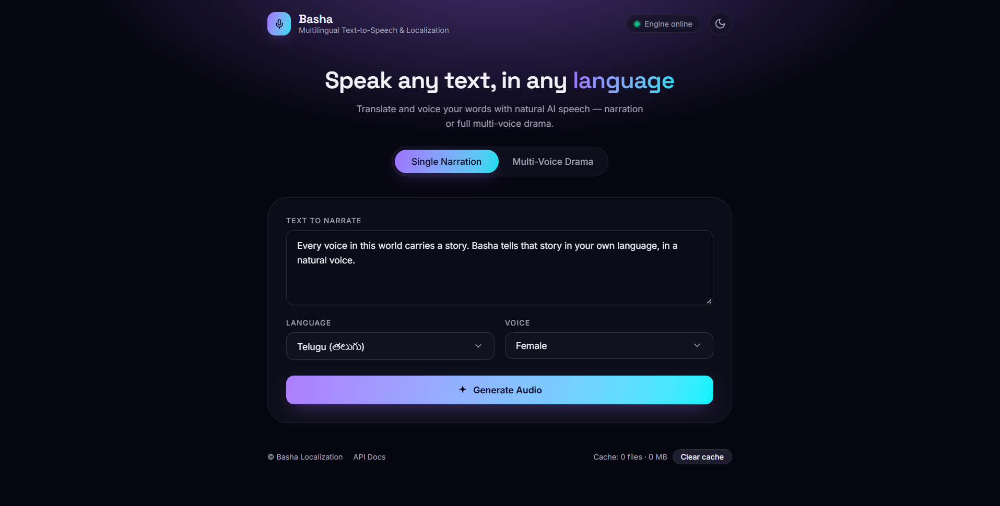
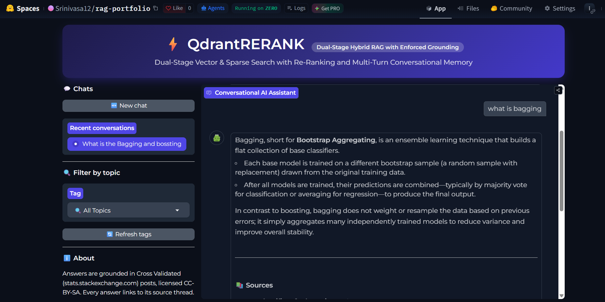

Hi, I'm Srinivasa
Aspiring AI Engineer building GenAI systems
Hybrid RAG, multi-agent LLM orchestration and multilingual speech, built for production and checked with measured evaluation.
Get In TouchAbout Me
I'm an AI & Data Science undergraduate at IIIT Sri City, and I build GenAI systems that are meant to run in production, not just in a notebook. My work covers hybrid RAG with enforced grounding, multi-agent LLM orchestration, and multilingual speech. I measure what I build with real evaluation sets, latency and failure-rate numbers, so every claim on this page comes with a result.
Education
- B.Tech, Artificial Intelligence & Data Science - IIIT Sri City (Aug 2023 – Present)
Experience
AI Engineering Intern
DRDO (Defence Research and Development Organisation)
May 2026 – July 2026- Built a 4-agent LangGraph + Gemini system that auto-diagnosed and repaired 70% of injected pipeline failures (7/10) across 7 categories and 4 severity tiers, healing schema drift in under 3 seconds.
- Engineered a dry-run/rollback actuator and a Pydantic v2 quarantine layer that isolates bad rows instead of aborting runs: 90% throughput on dirty batches, and 9/12 runs with zero data loss.
- Shipped an 11-endpoint FastAPI control plane, a live ops dashboard, and a dual SQLite/PostgreSQL adapter for zero-change serverless deployment on Vercel.
Projects

Basha: Multilingual Text-to-Speech & Localization Service
A CPU-only FastAPI service that translates and narrates English into 11 languages, with swappable TTS/translation backends and a multi-voice audio-drama mode that casts a distinct voice per character.
- 0.80–0.92 similarity across all 11 languages at 100% success (1,012-sentence FLORES-200 set)
- RTF ~0.1, about 10× real-time on CPU
- SHA-256 audio caching, async jobs, 45-case pytest suite, Dockerized on Render

QdrantRERANK: Dual-Stage Hybrid RAG with Enforced Grounding
A search and answer system over 93,455 StackExchange answers (218K chunks) that combines keyword and semantic search with a Cross-Encoder re-ranker. Code-level grounding gates block generation when the retrieved evidence is insufficient.
- Answer latency cut from ~15s to 1–2s
- Grounding enforced in code, not left to prompting alone
- Shared safety and validation layer across the web UI and API
Technical Skills
Python
SQL
LangGraph
LangChain
RAG
Hybrid Search Re-Ranking
Vector Databases (Qdrant, ChromaDB)
Hugging Face / sentence-transformers
Google Gemini
Groq
DeepEval
TensorFlow
Scikit-learn
FastAPI
Pydantic v2
REST APIs
PostgreSQL
SQLite
ETL
NumPy
Pandas
Docker
Git
Vercel
Render
LangSmith
structlog
pytest
Jupyter
Leadership
Data Science Domain Lead
IOTA Club, IIIT Sri City
Sep 2025 – July 2026- Mentored 20+ junior students in foundational and advanced Data Science projects.
- Organized and led workshops on Python, Data Analytics, and Machine Learning algorithms.
- Fostered a collaborative environment to encourage peer-to-peer learning and project development.
See My Full Story
For a more detailed look at my qualifications and experience, please download my resume.
Download ResumeGet In Touch
My inbox is always open. Whether you have a question, a potential opportunity, or just want to say hi, feel free to reach out to me directly at: